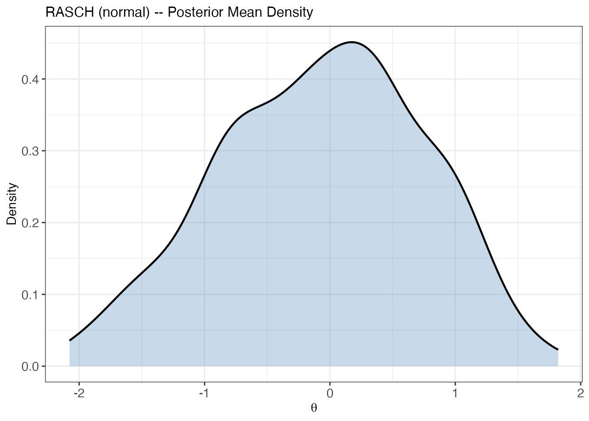
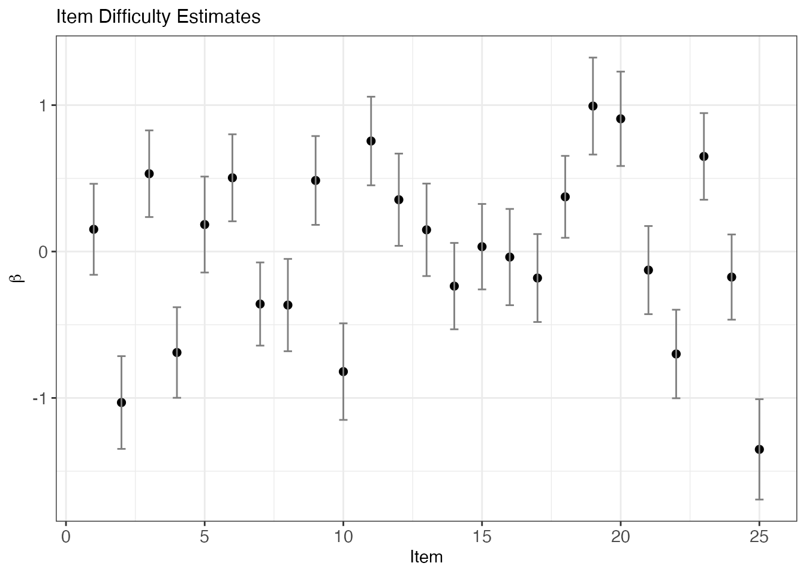
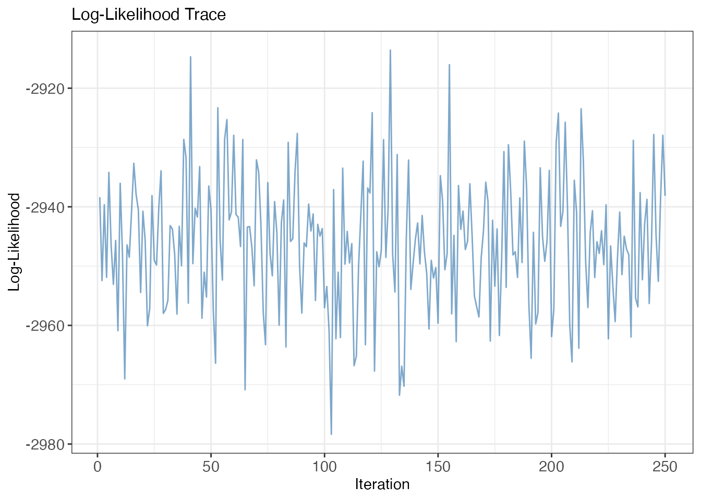
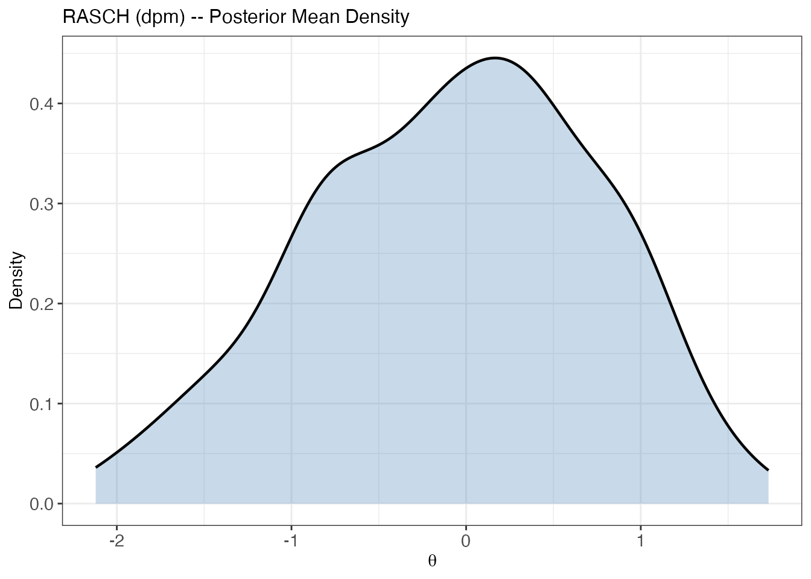
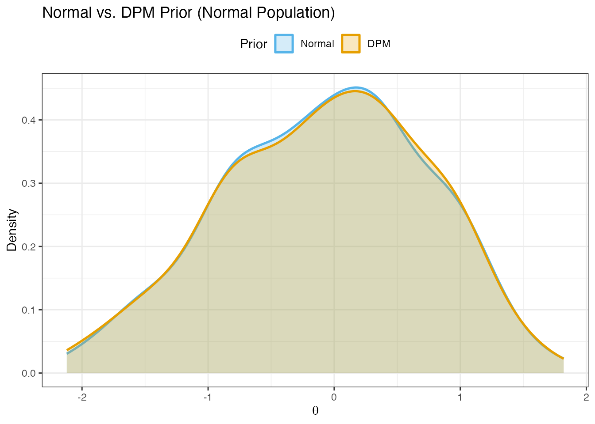
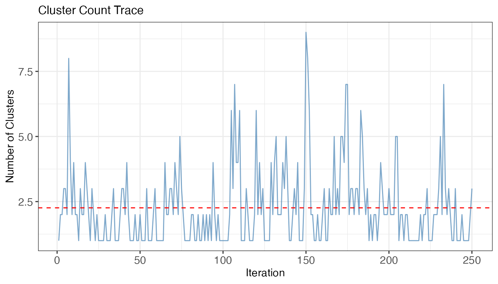
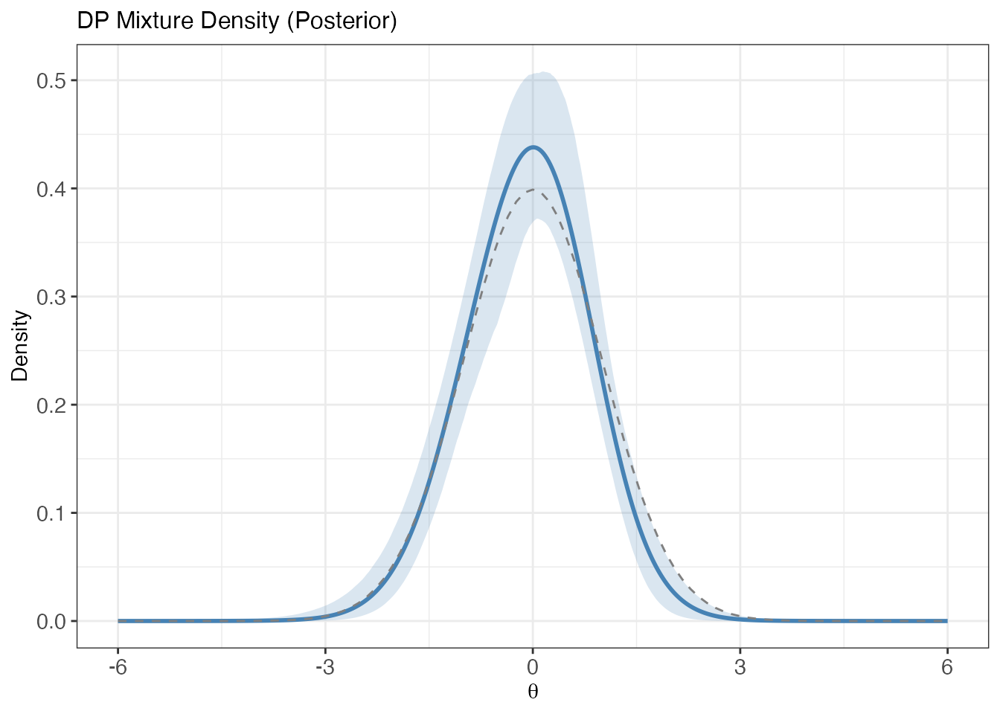
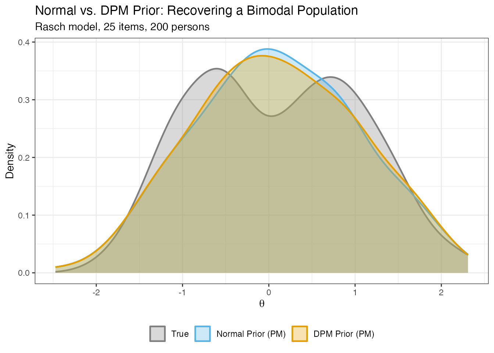

Quick Start: Your First IRT Model in 5 Minutes
JoonHo Lee
2026-07-01
Source:vignettes/quick-start.Rmd
quick-start.RmdOverview
This vignette walks you through a complete DPMirt workflow from start to finish. By the end you will know how to:
-
Simulate IRT response data with
dpmirt_simulate(). - Fit a Rasch model under both a Normal prior and a Dirichlet Process Mixture (DPM) prior.
- Visualize posterior densities, item parameters, and MCMC diagnostics.
- Extract person ability estimates using posterior mean (PM), constrained Bayes (CB), and triple-goal (GR) estimators.
No NIMBLE compilation is required for the simulation or estimation steps shown here — we load compact pre-computed fixtures with thinned posterior draws so you can follow along instantly.
Simulate Data
dpmirt_simulate() generates binary response data under a
known IRT model. When the optional IRTsimrel package is
installed, it uses IRTsimrel calibration (EQC by default, SAC for MSEM
targets) to hit a target marginal reliability for Rasch and 2PL
simulations; otherwise it falls back to a Paganin-style simulation. 3PL
simulation is also available, but currently uses DPMirt’s fallback
generator and does not target target_rho.
sim <- dpmirt_simulate(
n_persons = 200,
n_items = 25,
model = "rasch",
target_rho = 0.8,
latent_shape = "normal",
seed = 42
)
str(sim, max.level = 1)
#> List of 14
#> $ response : num [1:200, 1:25] 0 0 0 1 0 1 0 0 0 0 ...
#> ..- attr(*, "dimnames")=List of 2
#> $ theta : num [1:200] -2.5215 0.0563 -0.6466 1.135 -0.3096 ...
#> $ beta : num [1:25] 1.19 -0.164 -0.263 -0.372 0.736 ...
#> $ lambda : NULL
#> $ delta : NULL
#> $ n_persons : num 200
#> $ n_items : num 25
#> $ model : chr "rasch"
#> $ reliability : num 0.786
#> $ achieved_rho: num 0.8
#> $ target_rho : num 0.8
#> $ latent_shape: chr "normal"
#> $ eqc_result :List of 16
#> ..- attr(*, "class")= chr [1:2] "eqc_result" "list"
#> $ method : chr "irtsimrel"
#> - attr(*, "class")= chr "dpmirt_sim"The returned dpmirt_sim object contains the binary
response matrix (sim$response), the true person abilities
(sim$theta), and the true item difficulties
(sim$beta). sim$reliability is the empirical
KR-20 reliability of the generated response matrix. When IRTsimrel is
used, sim$achieved_rho records the calibration-level
achieved marginal reliability; it is NULL for fallback
simulations. You can inspect the simulation with
print():
sim
#> DPMirt Simulated Data
#> =====================
#> Model: RASCH
#> Persons: 200
#> Items: 25
#> Distribution: normal
#> Method: irtsimrel
#> Target rho: 0.8
#> KR-20: 0.786
#> EQC c*: 0.9059
#> EQC rho: 0.8Because dpmirt_simulate() does not fit a model, it runs
quickly — no NIMBLE compilation needed.
Fit a Rasch Model with a Normal Prior
The main entry point is dpmirt(). Below is the call you
would run in an interactive session. NIMBLE compiles the model on first
use, which takes roughly 1–2 minutes; after that, additional sampling is
fast while the compiled object is live in the current R session.
# This is the code you would run (takes ~2 minutes for compilation):
fit <- dpmirt(
sim$response,
model = "rasch",
prior = "normal",
niter = 10000,
nburnin = 2000,
thin = 32,
thin2 = 32,
seed = 100
)For this vignette we load a compact pre-computed result instead:
fit <- readRDS(find_extdata("vignette_fit_rasch_normal.rds"))Compact RDS fixtures retain thinned posterior draws suitable for summaries and plots, but they cannot be resumed because compiled NIMBLE pointers are only valid in the R session that created them.
Understanding the Output
A dpmirt_fit object stores posterior samples, chain/run
metadata, diagnostics, and model configuration. The print()
method gives a compact overview:
print(fit)
#> DPMirt Model Fit
#> ================
#> Model: RASCH
#> Prior: normal
#> Identification: constrained_item
#> Persons (N): 200
#> Items (I): 25
#> MCMC: 10000 iterations (2000 burnin, thin=32)
#> WAIC: 6079.03
#> Total time: 55.4 sec
#> Min ESS (items): 160
#> Min ESS (theta): 66Key fields:
- Model / Prior / Identification — what was specified.
- MCMC — iteration count, burn-in, and thinning.
- WAIC — Watanabe–Akaike information criterion for model comparison.
- Min ESS — minimum effective sample size across items and persons; a useful first-pass diagnostic to review alongside trace and rank plots.
- Total time — wall-clock time for the full pipeline.
For a richer view, call summary():
summary(fit)
#> DPMirt Model Summary
#> ====================
#>
#> Model Configuration:
#> Model: RASCH
#> Prior: normal
#> Identification: constrained_item
#> Rescaled: TRUE
#>
#> Data:
#> Persons (N): 200
#> Items (I): 25
#>
#> MCMC Settings:
#> Iterations: 10000
#> Burn-in: 2000
#> Thinning: 32
#> Chains: 1
#>
#> Timing:
#> Compilation: 18.1 sec
#> Sampling: 36.6 sec
#> Total: 55.4 sec
#>
#> Item Difficulty (beta) Summary:
#> Mean SD
#> beta[1] 0.152 0.155
#> beta[2] -1.031 0.158
#> beta[3] 0.532 0.148
#> beta[4] -0.690 0.155
#> beta[5] 0.184 0.164
#> beta[6] 0.504 0.149
#> beta[7] -0.358 0.142
#> beta[8] -0.366 0.158
#> beta[9] 0.486 0.152
#> beta[10] -0.820 0.165
#> beta[11] 0.755 0.151
#> beta[12] 0.354 0.157
#> beta[13] 0.148 0.158
#> beta[14] -0.236 0.148
#> beta[15] 0.033 0.146
#> beta[16] -0.038 0.164
#> beta[17] -0.181 0.150
#> beta[18] 0.374 0.140
#> beta[19] 0.994 0.166
#> beta[20] 0.907 0.161
#> beta[21] -0.127 0.151
#> beta[22] -0.700 0.151
#> beta[23] 0.650 0.148
#> beta[24] -0.174 0.146
#> beta[25] -1.351 0.171
#>
#> Person Ability (theta) Summary:
#> Range: [ -2.077 , 1.82 ]
#> Mean: -0.073
#> SD: 0.808
#>
#> Model Comparison:
#> WAIC: 6079.03The summary adds item-by-item parameter estimates (posterior mean and SD), a distributional summary of person abilities, and — for DPM models — cluster and concentration-parameter diagnostics.
Formal diagnostics are available with
dpmirt_diagnostics():
diag <- dpmirt_diagnostics(fit)
diag$chain_info
#> chain_id seed niter nburnin thin thin2 reset resumed n_draws_main
#> 1 1 100 10000 2000 32 32 TRUE FALSE 250
#> n_draws_theta row_start_main row_end_main row_start_theta row_end_theta
#> 1 250 1 250 1 250
#> sampling_time waic
#> 1 36.586 6079.035
rhat <- diag[["rhat"]]
if (is.null(rhat)) {
"R-hat unavailable for this single-chain fixture"
} else {
rhat
}
#> [1] "R-hat unavailable for this single-chain fixture"Single-chain fits, including the pre-computed fixtures used in this
vignette, return NULL R-hat. Use ESS, trace plots, and
substantive posterior checks as first-pass diagnostics; R-hat appears
when at least two labeled chains have retained draws.
Visualizations
plot(fit, type = ...) dispatches to 12 plot types. If
ggplot2 is installed the package uses it automatically;
otherwise base R graphics are produced. The same views are also
available through standalone helpers such as
dpmirt_plot_density() and
dpmirt_plot_trace().
Posterior Density of Theta
plot(fit, type = "density")
Kernel density of the posterior mean theta under a Normal prior.
This shows the kernel density of the posterior-mean person abilities. In this normal-population example, the estimated density is expected to be smooth and roughly unimodal.
Item Difficulty Estimates
plot(fit, type = "items")
Item difficulty estimates with +/- 2 posterior SD error bars.
Each point is the posterior mean of ; error bars span posterior standard deviations. Items are ordered from easiest (most negative) to hardest.
MCMC Trace
plot(fit, type = "trace")
Log-likelihood trace plot. A stationary trace is a first-pass visual mixing check.
A stationary log-likelihood trace with no visible trend or drift is a first-pass visual mixing check. For formal diagnostics see the Models and Workflow vignette.
Adding DPM Flexibility
The Normal prior assumes latent abilities follow a Gaussian distribution. When that assumption is questionable — bimodal populations, floor/ceiling effects, skew — a Dirichlet Process Mixture (DPM) prior lets the data speak.
# This is the code you would run:
fit_dpm <- dpmirt(
sim$response,
model = "rasch",
prior = "dpm",
niter = 10000,
nburnin = 2000,
thin = 32,
thin2 = 32,
seed = 101
)Again, we load a compact pre-computed result:
fit_dpm <- readRDS(find_extdata("vignette_fit_rasch_dpm.rds"))Posterior Density Comparison
plot(fit_dpm, type = "density")
Posterior mean theta density under the DPM prior.
The overlay below places both posteriors on the same axes for a direct comparison. Because the true latent distribution here is Normal, the two densities are nearly identical — the DPM prior adapts to the data and does not distort the estimates.
if (requireNamespace("ggplot2", quietly = TRUE)) {
library(ggplot2)
pm_normal <- colMeans(fit$theta_samp)
pm_dpm <- colMeans(fit_dpm$theta_samp)
df_overlay <- data.frame(
value = c(pm_normal, pm_dpm),
Prior = factor(rep(c("Normal", "DPM"), each = length(pm_normal)),
levels = c("Normal", "DPM"))
)
ggplot(df_overlay, aes(x = value, colour = Prior, fill = Prior)) +
geom_density(alpha = 0.25, linewidth = 0.9) +
scale_colour_manual(values = c(Normal = pal$parametric,
DPM = pal$semiparametric)) +
scale_fill_manual(values = c(Normal = pal$parametric,
DPM = pal$semiparametric)) +
labs(title = "Normal vs. DPM Prior (Normal Population)",
x = expression(theta), y = "Density") +
theme_bw() +
theme(legend.position = "top")
}
Normal-prior vs. DPM-prior posterior mean densities on the same data. When the true distribution is Normal, both priors recover it equally well.
Cluster Diagnostics
plot(fit_dpm, type = "clusters")
Cluster-count trace across MCMC iterations. Dashed line: posterior mean cluster count.
plot(fit_dpm, type = "clusters") shows how the number of
active clusters moves across retained draws. Stable oscillation without
a persistent trend is a first-pass mixing check; it is not a standalone
convergence diagnostic.
DP Mixture Density
plot(fit_dpm, type = "dp_density")
DP mixture posterior mean density with 95 percent pointwise credible band. Dashed line: N(0,1) reference.
The solid curve is the posterior mean of the DP mixture density
evaluated on a fine grid; the shaded ribbon is a 95% pointwise credible
band. The dashed line shows the standard Normal for reference. Computing
this density from scratch reconstructs posterior DP-measure samples and
can be expensive. The compact vignette fixture stores a plot-ready
dp_density summary only; call
dpmirt_dp_density() on a live/full DPM fit, not on these
compact fixtures, if you need to recompute the DP measure.
Seeing the DPM Advantage
The example above used a truly Normal population, so both priors performed equally well. But what happens when the population departs from normality? The DPMirt package ships with compact pre-computed results for a bimodal population — a 50/50 mixture of two groups centered at and — that reveals the DPM prior’s key advantage.
sim_bm <- readRDS(find_extdata("vignette_sim_bimodal.rds"))
fit_n_bm <- readRDS(find_extdata("vignette_fit_rasch_normal_bimodal.rds"))
fit_d_bm <- readRDS(find_extdata("vignette_fit_rasch_dpm_bimodal.rds"))
if (requireNamespace("ggplot2", quietly = TRUE)) {
true_theta <- sim_bm$theta
pm_normal <- colMeans(fit_n_bm$theta_samp)
pm_dpm <- colMeans(fit_d_bm$theta_samp)
df_bm <- data.frame(
value = c(true_theta, pm_normal, pm_dpm),
source = factor(rep(c("True", "Normal Prior (PM)", "DPM Prior (PM)"),
each = length(true_theta)),
levels = c("True", "Normal Prior (PM)", "DPM Prior (PM)"))
)
ggplot(df_bm, aes(x = value, fill = source, colour = source)) +
geom_density(alpha = 0.30, linewidth = 0.8) +
scale_fill_manual(values = c("True" = pal$reference,
"Normal Prior (PM)" = pal$parametric,
"DPM Prior (PM)" = pal$semiparametric)) +
scale_colour_manual(values = c("True" = pal$reference,
"Normal Prior (PM)" = pal$parametric,
"DPM Prior (PM)" = pal$semiparametric)) +
labs(title = "Normal vs. DPM Prior: Recovering a Bimodal Population",
subtitle = "Rasch model, 25 items, 200 persons",
x = expression(theta), y = "Density") +
theme_bw() +
theme(legend.position = "bottom", legend.title = element_blank())
}
When the true population is bimodal, the Normal prior forces a unimodal fit (blue), masking the two-group structure. The DPM prior (orange) recovers both modes.
Key insight. The Normal prior has no mechanism to represent two modes, so it forces all estimates toward a single central peak. The DPM prior adapts its shape to the data, preserving the bimodal structure. This difference is most consequential for classification decisions (e.g., identifying students for intervention) and for reporting on the shape of the population distribution. See the posterior summary vignette for a detailed comparison of estimators that exploit this flexibility.
Extracting Estimates
dpmirt_estimates() computes person and item point
estimates using three complementary posterior summary methods:
| Method | Full name | Optimizes |
|---|---|---|
| PM | Posterior Mean | Individual MSE (Goal 1) |
| CB | Constrained Bayes (Ghosh, 1992) | EDF estimation (Goal 3) |
| GR | Triple-Goal (Shen & Louis, 1998) | Ranking + EDF (Goals 2 & 3) |
est <- dpmirt_estimates(fit_dpm, methods = c("pm", "cb", "gr"))The theta element is a data frame with one row per
person:
head(est$theta, 10)
#> theta_pm theta_psd theta_cb theta_gr rbar rhat theta_lower
#> eta[1] -1.64285702 0.4766845 -1.82627181 -1.81331598 13.868 7 -2.54713745
#> eta[2] 0.05480995 0.3948536 0.07014816 0.03534768 107.740 106 -0.73603358
#> eta[3] 0.06252851 0.3846779 0.07877036 0.07052001 109.004 109 -0.73966539
#> eta[4] 1.15294812 0.4091460 1.29684997 1.35338609 179.372 191 0.35732496
#> eta[5] -0.65482873 0.4126593 -0.72257090 -0.62142890 56.032 55 -1.46137455
#> eta[6] 0.80144518 0.3840819 0.90419511 0.79443861 162.224 166 0.08404592
#> eta[7] 1.73157522 0.5066714 1.94321937 2.22336701 193.828 200 0.77466479
#> eta[8] -0.06628711 0.3844546 -0.06512624 -0.06021697 98.388 98 -0.86402677
#> eta[9] 0.65946011 0.3682218 0.74558725 0.71775515 153.764 161 -0.02591577
#> eta[10] -0.05999882 0.3781730 -0.05810176 -0.03532863 99.232 100 -0.81164159
#> theta_upper
#> eta[1] -0.7310668
#> eta[2] 0.7879246
#> eta[3] 0.7153256
#> eta[4] 1.9459509
#> eta[5] 0.1410935
#> eta[6] 1.5895208
#> eta[7] 2.7688739
#> eta[8] 0.5854657
#> eta[9] 1.3693816
#> eta[10] 0.6112785Which estimator should you use? It depends on your inferential goal. If you need the best point prediction for each individual, use PM. If you need the set of estimates to reproduce the shape of the ability distribution (e.g., for group-level reporting), use CB. If you need both accurate rankings and distributional fidelity, use GR. See the Posterior Summaries vignette for an in-depth comparison.
Item estimates are available in est$beta:
head(est$beta, 10)
#> beta_pm beta_psd beta_cb beta_gr rbar rhat beta_lower
#> beta[1] 0.1307698 0.1442099 0.1350333 0.09161858 14.516 14 -0.1579032
#> beta[2] -1.0297955 0.1703261 -1.0633696 -1.05854134 2.208 2 -1.3789429
#> beta[3] 0.5317292 0.1696429 0.5490650 0.61044823 19.988 21 0.2120664
#> beta[4] -0.6976213 0.1592790 -0.7203656 -0.73821668 4.328 4 -0.9963324
#> beta[5] 0.1922493 0.1606743 0.1985172 0.22518135 15.392 16 -0.1352563
#> beta[6] 0.5271893 0.1569807 0.5443771 0.52510925 19.972 20 0.2025349
#> beta[7] -0.3448820 0.1581377 -0.3561261 -0.35726360 7.476 7 -0.6537771
#> beta[8] -0.3726788 0.1579125 -0.3848292 -0.46892254 7.156 6 -0.6754548
#> beta[9] 0.4772037 0.1637734 0.4927618 0.44679281 19.280 19 0.1673519
#> beta[10] -0.8456039 0.1545319 -0.8731728 -0.87159981 3.340 3 -1.1463779
#> beta_upper
#> beta[1] 0.41353003
#> beta[2] -0.68482805
#> beta[3] 0.87901922
#> beta[4] -0.37439426
#> beta[5] 0.48604781
#> beta[6] 0.82924555
#> beta[7] -0.07611460
#> beta[8] -0.09238195
#> beta[9] 0.77710904
#> beta[10] -0.53420017If you need posterior draws for custom summaries or graphics, use
dpmirt_draws():
theta_draws <- dpmirt_draws(fit_dpm, vars = "theta")
dim(theta_draws)
#> [1] 250 200
theta_draws[1:5, 1:4]
#> eta[1] eta[2] eta[3] eta[4]
#> [1,] -1.822838 -0.406710352 0.06378316 1.744004
#> [2,] -2.269677 -0.009964018 0.50215032 1.213680
#> [3,] -1.871565 0.227038139 -0.08308460 1.124954
#> [4,] -1.432383 -0.156331852 0.73955294 1.021192
#> [5,] -2.039467 0.092179447 0.42273050 1.026158dpmirt_draws() currently returns retained rescaled
draws. Raw, unrescaled draw extraction and disk-backed draw storage are
reserved for a future release.
What’s Next?
You now have a working end-to-end pipeline. Depending on your goal, the following vignettes go deeper:
| Step | What to read | Why |
|---|---|---|
| Understand models | Models and Workflow | Step-by-step control over specification, live compiled objects, sampling, diagnostics, 3PL delta, and identification limits |
| Choose an estimator | Posterior Summaries | When PM vs CB vs GR; shrinkage diagnostics and loss evaluation |
| Set DPM priors | Prior Elicitation | Optional DPprior calibration of ; Gamma(1, 3) fallback |
Happy modeling! You are now equipped to fit your own Rasch models with both parametric (Normal) and semiparametric (DPM) priors. For questions, bugs, or suggestions, visit the DPMirt repository.